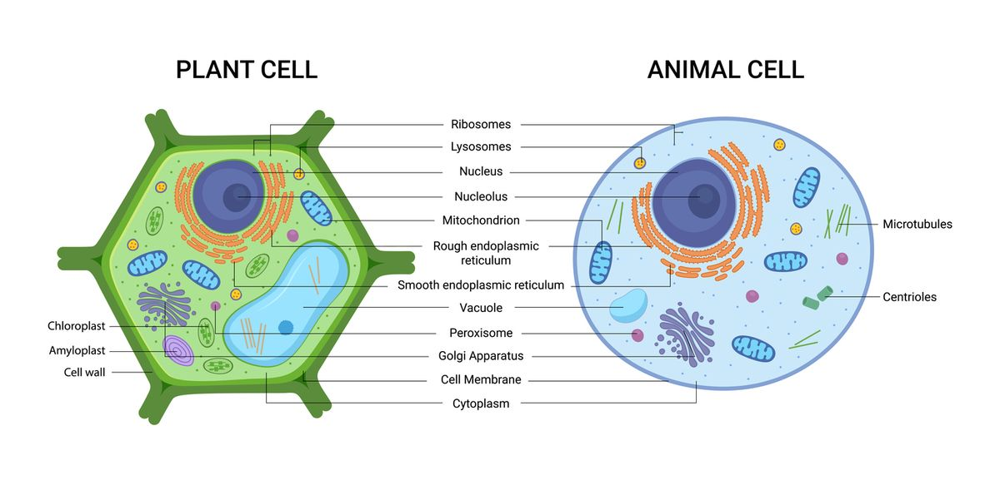

IPA SMP
Organisasi Kehidupan
- 1. Sel
- 1.1 Teori tentang Sel
- 1.2 Struktur Sel
- 2. Tingkat Jaringan Sel
- 2.1 Jaringan pada Tumbuhan
- 2.2 Jaringan pada Hewan
- 3. Tingkat Organ
- 3.1 Organ pada Manusia dan Hewan
- 3.2 Organ pada Tumbuhan
1. Sel
Sel merupakan unit terkecil penyusun makhluk hidup atau oranisme.
1.1 Teori tentang Sel
Teori sel merupakan salah satu dasar dari biologi modern. Teori ini menyatakan bahwa:
- Semua makhluk hidup tersusun atas satu atau lebih sel.
- Sel merupakan unit struktural dan fungsional terkecil dari kehidupan.
- Semua sel berasal dari sel sebelumnya melalui proses pembelahan sel.
1.1.1 Tokoh-Tokoh Penemu Teori Sel
Beberapa tokoh penting yang berkontribusi dalam perkembangan teori sel adalah:
- Jakob Schleiden – Seorang ahli botani Jerman yang menyatakan bahwa semua bagian tumbuhan tersusun atas sel. Ia menyampaikan pendapat ini pada tahun 1838.
- Theodor Schwann – Seorang ahli zoologi Jerman yang mengemukakan bahwa semua hewan juga terdiri atas sel. Bersama dengan Schleiden, ia menyusun dasar awal teori sel.
- Rudolf Virchow – Pada tahun 1855, ia menambahkan prinsip bahwa semua sel berasal dari sel sebelumnya (Omnis cellula e cellula), yang menjadi pelengkap penting dalam teori sel.
- Robert Hooke – Pada tahun 1665, Robert Hooke mengamati irisan tipis gabus menggunakan mikroskop dan menemukan ruang-ruang kecil yang ia sebut "cellulae" (sel). Istilah ini kemudian menjadi dasar kata "sel" dalam biologi.
Contoh Penerapan Teori Sel
Luka pada kulit akan sembuh karena sel-sel di sekitar luka membelah dan menggantikan sel yang rusak. Ini membuktikan bahwa sel berasal dari sel yang sudah ada sebelumnya.
1.2 Struktur Sel
Sel memiliki bagian-bagian utama yang menjalankan fungsi kehidupan. Berikut ini adalah struktur dasar sel:
Gambar: Struktur Sel Hewan dan Tumbuhan
- Dinding Sel (cell wall): Struktur kaku yang berada di luar membran sel, berfungsi memberikan bentuk, perlindungan, dan kekuatan pada sel. Hanya ditemukan pada sel tumbuhan, bakteri, dan jamur.
- Membran Sel (cell membrane): Lapisan tipis yang mengelilingi sel, berfungsi mengatur keluar masuknya zat dari dan ke dalam sel.
- Sitoplasma (cytoplasm): Cairan seperti gel di dalam sel tempat organel-organel berada dan reaksi kimia seluler berlangsung.
- Inti Sel (nucleus): Mengandung DNA yang mengendalikan seluruh aktivitas sel dan diwariskan saat pembelahan sel.
- Nukleolus (nucleolus): Struktur kecil di dalam nukleus yang berperan dalam produksi ribosom.
- Mitokondria (mitochondria): Organel penghasil energi sel melalui proses respirasi seluler.
- Ribosom (ribosome): Organel kecil yang berfungsi sebagai tempat sintesis protein, bisa menempel pada RE kasar atau bebas di sitoplasma.
- Retikulum Endoplasma (endoplasmic reticulum): Saluran di dalam sel yang membantu transportasi zat. Terbagi menjadi RE kasar (rough ER) dan RE halus (smooth ER).
- Badan Golgi (Golgi apparatus): Organel yang memproses, mengemas, dan mengirimkan protein dan lipid.
- Lisosom (lysosome): Organel yang mengandung enzim pencernaan untuk menghancurkan zat asing atau organel yang rusak (terutama di sel hewan).
- Sentriol (centriole): Struktur silindris yang berperan dalam pembelahan sel (hanya ditemukan pada sel hewan).
- Plastida (plastid): Organel yang hanya terdapat pada sel tumbuhan, berfungsi dalam penyimpanan dan fotosintesis. Contohnya meliputi:
- Kloroplas (chloroplast): Mengandung klorofil untuk menangkap energi cahaya dan melakukan fotosintesis.
- Amiloplas (amyloplast): Menyimpan cadangan makanan berupa pati (amilum).
- Peroksisom (peroxisome): Organel yang mengandung enzim untuk memecah asam lemak dan menetralisasi racun seperti hidrogen peroksida.
- Vakuola (vacuole): Rongga berisi cairan dalam sel, berfungsi menyimpan air, nutrisi, dan zat sisa. Pada tumbuhan, ukurannya besar; pada hewan, kecil atau tidak ada.
Perbedaan Struktur Sel Hewan dan Tumbuhan
| Organel Sel | Fungsi | Sel Hewan | Sel Tumbuhan |
|---|---|---|---|
| Dinding Sel | Melindungi dan memberi bentuk tetap | ❌ | ✅ |
| Membran Sel | Mengatur keluar masuknya zat | ✅ | ✅ |
| Sitoplasma | Tempat berlangsungnya reaksi seluler | ✅ | ✅ |
| Inti Sel (Nukleus) | Mengontrol aktivitas sel | ✅ | ✅ |
| Nukleolus | Membentuk ribosom | ✅ | ✅ |
| Mitokondria | Menghasilkan energi (ATP) | ✅ | ✅ |
| Ribosom | Sintesis protein | ✅ | ✅ |
| Retikulum Endoplasma Halus | Sintesis lipid dan detoksifikasi | ✅ | ✅ |
| Retikulum Endoplasma Kasar | Sintesis dan pengemasan protein | ✅ | ✅ |
| Badan Golgi | Modifikasi dan distribusi protein | ✅ | ✅ |
| Lisosom | Menghancurkan zat sisa dan sel rusak | ✅ | Jarang |
| Sentriol | Membantu pembelahan sel | ✅ | ❌ |
| Plastida | Mengandung pigmen, berperan dalam fotosintesis dan penyimpanan | ❌ | ✅ |
| Kloroplas | Tempat berlangsungnya fotosintesis | ❌ | ✅ |
| Amiloplas | Menyimpan pati | ❌ | ✅ |
| Peroksisom | Menguraikan H2O2 (hidrogen peroksida) | ✅ | ✅ |
| Vakuola | Menyimpan air, zat sisa, dan cadangan makanan | Kecil | Besar |
Video Penjelasan Struktur Sel
Latihan 1
Soal 1
Siapakah ilmuwan yang menyatakan bahwa semua makhluk hidup tersusun dari sel?
- A. Robert Hooke
- B. Jkob Schleiden dan Theodor Schwann
- C. Charles Darwin
- D. Louis Pasteur
Soal 2
Sel yang tidak memiliki memberan inti disebut...
- A. Prokariotik
- B. Eukariotik
- C. Multiseluler
- D. Uniseluler
Soal 3
Sel yang memiliki memberan inti disebut...
- A. Prokariotik
- B. Eukariotik
- C. Multiseluler
- D. Uniseluler
Soal 4
Amoeba merupakan salah satu organisme yang hanya memiliki 1 sel atau yang biasa disebut...
- A. Prokariotik
- B. Eukariotik
- C. Multiseluler
- D. Uniseluler
Soal 5

Berdasarkan gambar sel hewan di atas, pasangkan organel sel berikut dengan benar!
Soal 6

Berdasarkan gambar sel tumbuhan di atas, pasangkan organel sel berikut dengan benar!
Soal 7
Pilih organel sel yang sesuai dengan fungsi organel sel yang diberikan!
1. Melindungi dan memberi bentuk tetap pada sel.
2. Mengandung informasi genetik yang mengatur semua aktivitas sel.
3. Tempat terjadinya proses fotosintesis pada sel tumbuhan.
4. Tempat terjadinya respirasi sel dan menghasilkan energi dalam bentuk ATP.
5. Membantu dalam sintesis protein dan melepaskan ribosom ke sitoplasma.
6. Mengatur keluar masuknya bahan dari dan ke dalam sel.
7. Menghasilkan enzim yang dapat mencerna bahan-bahan yang tidak diperlukan oleh sel.
8. Tempat penyimpanan air, garam, dan zat-zat lain yang diperlukan oleh sel.
9. Menghasilkan enzim untuk proses detoksifikasi dan metabolisme lemak.
10. Berfungsi dalam pembelahan sel dan menentukan posisi organel lainnya dalam sel.
11. Tempat berlangsungnya reaksi metabolisme sel dan peredaran organel.
12. Menghasilkan energi untuk kegiatan sel melalui proses respirasi seluler.
13. Menyusun dan memodifikasi protein yang akan digunakan oleh sel atau disekresikan keluar sel.
14. Tempat sintesis lemak dan pemecahan zat berbahaya dalam tubuh sel.
2. Tingkat Jaringan Sel
Setelah tingkat sel, tingkat organisasi kehidupan selanjutnya adalah jaringan. Jaringan adalah kumpulan sel yang memiliki struktur dan fungsi yang sama serta bekerja sama untuk melakukan tugas tertentu.
2.1 Jaringan pada Tumbuhan
Tumbuhan memiliki beberapa jenis jaringan yang membantu mereka tumbuh dan berkembang:
- Jaringan Meristem: Jaringan muda yang aktif membelah, ditemukan di ujung akar dan batang (meristem apikal).
- Jaringan Epidermis: Lapisan terluar yang melindungi permukaan organ tumbuhan seperti daun dan batang.
- Jaringan Parenkim: Jaringan dasar yang berfungsi dalam fotosintesis, penyimpanan, dan penyembuhan luka.
- Jaringan Penyokong: Terdiri dari kolenkim dan sklerenkim yang berfungsi memberi kekuatan dan bentuk pada tumbuhan.
- Jaringan Pengangkut: Terdiri dari xilem (mengangkut air dan mineral) dan floem (mengangkut hasil fotosintesis).
2.1.1 Jaringan Meristem
Jaringan meristem adalah jaringan muda pada tumbuhan yang sel-selnya aktif membelah untuk pertumbuhan. Ciri khas jaringan ini adalah sel-selnya berukuran kecil, berdinding tipis, memiliki inti sel besar, dan tidak memiliki vakuola besar.
Berdasarkan letaknya, jaringan meristem dibagi menjadi tiga jenis:
- Meristem Apikal: Terletak di ujung akar dan batang, bertanggung jawab atas pertumbuhan primer atau pertambahan panjang tumbuhan.
- Meristem Lateral: Terletak di kambium dan kambium gabus, berperan dalam pertumbuhan sekunder atau pertambahan diameter batang.
- Meristem Interkalar: Terletak di antara jaringan dewasa, misalnya di pangkal ruas batang rumput, dan membantu pertumbuhan cepat setelah pemotongan.
Jaringan meristem merupakan pusat pertumbuhan tumbuhan dan menjadi dasar terbentuknya jaringan dewasa lainnya.

Gambar: Jaringan-Meristem
2.1.2 Jaringan Epidermis
Jaringan epidermis merupakan jaringan paling luar pada organ tumbuhan seperti akar, batang, dan daun. Fungsi utamanya adalah melindungi bagian dalam tumbuhan dari pengaruh lingkungan luar.
Ciri-ciri jaringan epidermis antara lain:
- Terdiri dari satu lapis sel yang rapat tanpa ruang antarsel.
- Memiliki dinding sel yang menebal di bagian luar.
- Dapat mengalami modifikasi membentuk struktur seperti stomata, trikomata (rambut-rambut halus), dan akar rambut.
Beberapa fungsi penting jaringan epidermis adalah:
- Melindungi jaringan di bawahnya dari kerusakan fisik dan kehilangan air.
- Mengatur pertukaran gas melalui stomata.
- Menyerap air dan mineral pada akar melalui rambut akar.
- Mengurangi penguapan air melalui lapisan kutikula yang terdapat di permukaan daun.

Gambar: Jaringan-Epidermis
2.1.3 Jaringan Parenkim
Jaringan parenkim, atau jaringan dasar, merupakan jaringan yang paling umum dan menyusun sebagian besar tubuh tumbuhan. Sel-sel parenkim bersifat hidup, berdinding tipis, dan memiliki vakuola besar.
Ciri-ciri jaringan parenkim antara lain:
- Bentuk sel bervariasi, biasanya segi banyak.
- Memiliki dinding sel tipis dan fleksibel.
- Dapat mengalami diferensiasi sesuai fungsi tumbuhan.
Fungsi jaringan parenkim sangat beragam, antara lain:
- Parenkim Asimilasi: Mengandung banyak kloroplas dan berperan dalam proses fotosintesis (misalnya pada mesofil daun).
- Parenkim Penimbun: Menyimpan cadangan makanan seperti pati, air, dan lemak (terdapat di umbi, biji, dan batang).
- Parenkim Pengangkut: Membantu proses pengangkutan zat melalui hubungan dengan jaringan pengangkut.
- Parenkim Penyembuh Luka: Membantu regenerasi jaringan jika tumbuhan terluka.
- Parenkim Aerankim: Mengandung banyak ruang antar sel yang membantu pertukaran gas, terutama pada tumbuhan air.

Gambar: Jaringan-Parenkim
2.1.4 Jaringan Penyokong
Jaringan penyokong adalah jaringan yang memberikan kekuatan dan bentuk pada tumbuhan, terutama untuk menopang tumbuhan agar dapat berdiri tegak. Jaringan ini terdiri dari dua jenis utama: kolenkim dan sklerenkim.
Berikut penjelasan masing-masing jenis jaringan penyokong:
- Kolenkim:
- Tersusun dari sel-sel hidup dengan dinding sel yang menebal pada bagian sudutnya.
- Bersifat fleksibel dan banyak ditemukan pada organ muda seperti batang dan tangkai daun.
- Memberikan kekuatan sekaligus memungkinkan tumbuhan tetap lentur.
- Sklerenkim:
- Tersusun dari sel-sel mati dengan dinding sel yang sangat tebal dan mengandung lignin.
- Memberikan kekuatan yang tinggi dan kekakuan pada bagian tumbuhan yang sudah tua.
- Terdiri dari dua bentuk: serabut (fiber) dan sklereid (sel batu).
Dengan adanya jaringan penyokong, tumbuhan dapat bertahan terhadap tekanan angin, beban sendiri, serta gangguan fisik dari luar.

Gambar: Jaringan-Penyokong
2.1.5 Jaringan Pengangkut
Jaringan pengangkut adalah jaringan yang berfungsi mengangkut air, mineral, dan hasil fotosintesis ke seluruh bagian tumbuhan. Terdiri dari dua jenis utama: xilem dan floem.
Berikut penjelasan masing-masing jenis jaringan pengangkut:
- Xilem:
- Berfungsi mengangkut air dan mineral dari akar ke daun.
- Tersusun dari sel-sel mati seperti trakea, trakeid, dan parenkim xilem.
- Juga berperan dalam menyokong tumbuhan karena dinding selnya mengandung lignin.
- Floem:
- Berfungsi mengangkut hasil fotosintesis (seperti glukosa) dari daun ke seluruh bagian tumbuhan.
- Tersusun dari sel hidup seperti sel pengiring, unsur tapis, parenkim floem, dan serabut floem.
- Floem memungkinkan distribusi zat makanan ke bagian tumbuhan yang sedang tumbuh atau menyimpan cadangan makanan.
Jaringan pengangkut sangat penting untuk kelangsungan hidup tumbuhan karena mendistribusikan zat-zat esensial secara efisien.

Gambar: Jaringan-Pengangkut
Video Penjelasan Jarnigan Pada Tumbuhan
Latihan 2.1
Soal 1
Jaringan tumbuhan yang aktif membelah dan ditemukan di ujung akar serta batang disebut...
- A. Jaringan Epidermis
- B. Jaringan Parenkim
- C. Jaringan Meristem
- D. Jaringan Sklerenkim
Soal 6

Berdasarkan gambar jaringan epidermis tumbuhan di atas, pasangkan bagian-bagian berikut dengan nomor yang sesuai pada gambar!
2.2 Jaringan pada Hewan
Hewan memiliki jaringan yang kompleks dan terbagi menjadi beberapa jenis utama:
- Jaringan Epitel: Menyusun permukaan luar dan dalam organ serta berfungsi sebagai pelindung dan penyerap.
- Jaringan Otot: Terdiri dari otot polos, otot lurik, dan otot jantung, berfungsi untuk pergerakan tubuh.
- Jaringan Saraf: Menghantarkan impuls saraf, terdiri dari neuron dan sel penyokong (neuroglia).
- Jaringan Ikat: Menghubungkan dan menyokong bagian tubuh, contohnya tulang, darah, dan jaringan lemak.
2.2.1 Jaringan Epitel
Jaringan epitel adalah jaringan yang melapisi permukaan luar dan dalam tubuh hewan maupun manusia, termasuk organ-organ dalam. Jaringan ini berfungsi sebagai pelindung, penyerap, dan penghasil sekresi.
Berdasarkan bentuk dan susunannya, jaringan epitel dibagi menjadi beberapa jenis, yaitu:
- Epitel selapis pipih:
- Tersusun dari satu lapis sel pipih.
- Berfungsi untuk difusi dan filtrasi.
- Ditemukan pada alveolus paru-paru dan dinding kapiler darah.
- Epitel selapis kubus:
- Tersusun dari satu lapis sel berbentuk kubus.
- Berfungsi untuk sekresi dan absorpsi.
- Ditemukan pada kelenjar ludah dan tubulus ginjal.
- Epitel selapis silindris:
- Tersusun dari satu lapis sel berbentuk silindris.
- Berfungsi dalam sekresi dan absorpsi.
- Ditemukan pada saluran pencernaan (usus).
- Epitel berlapis pipih:
- Tersusun dari beberapa lapis sel pipih.
- Berfungsi sebagai pelindung terhadap gesekan dan cedera.
- Ditemukan pada kulit, mulut, dan kerongkongan.
- Epitel silindris berlapis semu:
- Tampak seperti berlapis tetapi sebenarnya hanya satu lapis dengan ketinggian sel yang bervariasi.
- Berfungsi untuk sekresi dan pergerakan lendir.
- Ditemukan pada saluran pernapasan dan trakea (biasanya bersilia).
- Epitel transisional:
- Dapat berubah bentuk tergantung pada kondisi organ.
- Berfungsi untuk meregang saat volume organ berubah.
- Ditemukan pada kandung kemih.
Dengan keberagaman bentuk dan fungsi, jaringan epitel memiliki peran penting dalam menjaga integritas dan fungsi tubuh makhluk hidup.

Gambar: Jaringan-Epitel
2.2.2 Jaringan Otot
Jaringan otot adalah jaringan yang berfungsi untuk menghasilkan gerakan tubuh, baik gerakan sadar maupun tidak sadar. Jaringan ini tersusun atas sel-sel otot yang mampu berkontraksi dan relaksasi.
Berdasarkan struktur dan cara kerjanya, jaringan otot dibagi menjadi tiga jenis utama:
- Otot Rangka (Otot Lurik):
- Berbentuk silindris, panjang, dan memiliki garis-garis melintang (lurik).
- Bekerja secara sadar (dikendalikan oleh kehendak).
- Menempel pada rangka tubuh dan berperan dalam pergerakan tubuh.
- Otot Polos:
- Berbentuk gelendong dan tidak memiliki garis-garis lurik.
- Bekerja secara tidak sadar (otomatis).
- Ditemukan pada organ dalam seperti dinding usus, pembuluh darah, dan saluran pernapasan.
- Otot Jantung:
- Memiliki struktur menyerupai otot lurik tetapi bekerja tidak sadar seperti otot polos.
- Sel-selnya bercabang dan terhubung satu sama lain melalui diskus interkalaris.
- Hanya ditemukan di jantung dan berfungsi memompa darah ke seluruh tubuh.
Jaringan otot sangat penting dalam sistem gerak karena kemampuannya dalam berkontraksi dan menghasilkan gaya untuk menggerakkan bagian tubuh.

Gambar: Jaringan-Otot
2.2.3 Jaringan Saraf
Jaringan saraf adalah jaringan yang berfungsi untuk menerima, mengolah, dan menghantarkan impuls (rangsangan) dari dan ke seluruh bagian tubuh. Jaringan ini menyusun sistem saraf pusat dan sistem saraf tepi.
Jaringan saraf tersusun atas dua jenis sel utama:
- Neuron (sel saraf):
- Unit dasar dari sistem saraf yang menghantarkan impuls listrik.
- Terdiri dari tiga bagian utama: badan sel, dendrit, dan akson.
- Bertugas mengirimkan informasi dari reseptor ke otak atau dari otak ke efektor.
- Sel Neuroglia (sel glia):
- Sel pendukung neuron yang tidak menghantarkan impuls.
- Berperan melindungi, memberi nutrisi, dan menjaga lingkungan sekitar neuron.
- Berjumlah lebih banyak daripada neuron di sistem saraf.
Jaringan saraf memungkinkan tubuh merespons rangsangan dari lingkungan, mengoordinasikan fungsi tubuh, dan menyimpan informasi dalam bentuk memori dan pengalaman.

Gambar: Jaringan-Saraf
2.2.4 Jaringan Ikat
Jaringan ikat adalah jaringan yang berfungsi menghubungkan, menyokong, dan melindungi jaringan atau organ lain dalam tubuh. Jaringan ini memiliki matriks ekstraseluler yang luas dan bervariasi tergantung pada fungsinya.
Jaringan ikat dibedakan menjadi dua jenis utama berdasarkan struktur dan fungsinya:
- Jaringan Ikat Sejati:
- Jaringan Ikat Longgar: mengisi ruang antar organ, membungkus pembuluh darah dan saraf, serta menyokong epitel.
- Jaringan Ikat Padat: tersusun dari serabut kolagen yang padat, berfungsi menghubungkan otot dengan tulang (tendon) dan tulang dengan tulang (ligamen).
- Jaringan Ikat Khusus:
- Jaringan Lemak: menyimpan energi dalam bentuk lemak dan melindungi organ dalam dari benturan.
- Jaringan Tulang Rawan: fleksibel dan kuat, ditemukan pada hidung, telinga, dan ujung tulang.
- Jaringan Tulang Keras: menyusun kerangka tubuh dan berfungsi sebagai penopang serta pelindung organ tubuh.
- Jaringan Darah: berfungsi mengangkut oksigen, karbon dioksida, nutrisi, hormon, dan sisa metabolisme.
Jaringan ikat sangat penting dalam menjaga struktur tubuh dan memfasilitasi transportasi zat-zat penting ke seluruh tubuh.

Gambar: Jaringan-Ikat
Video Penjelasan Jaringan Epitel dan Ikat
Video Penjelasan Jaringan Otot dan Saraf
Contoh
Ketika kamu berolahraga, jaringan otot bekerja untuk menggerakkan tubuh, sementara jaringan saraf mengatur koordinasi gerakan tersebut melalui impuls dari otak.